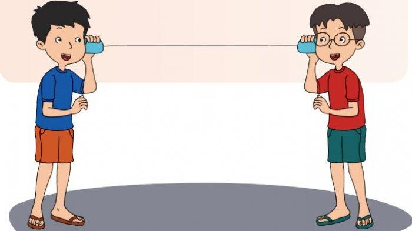
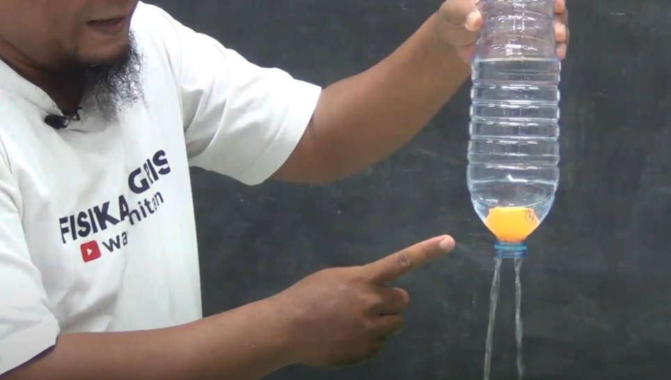
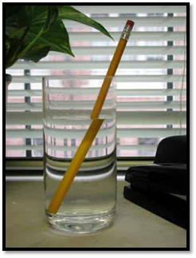
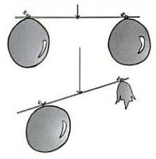
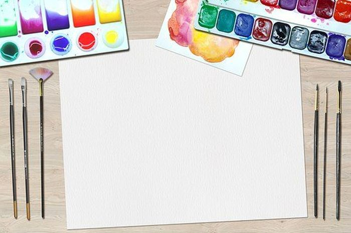
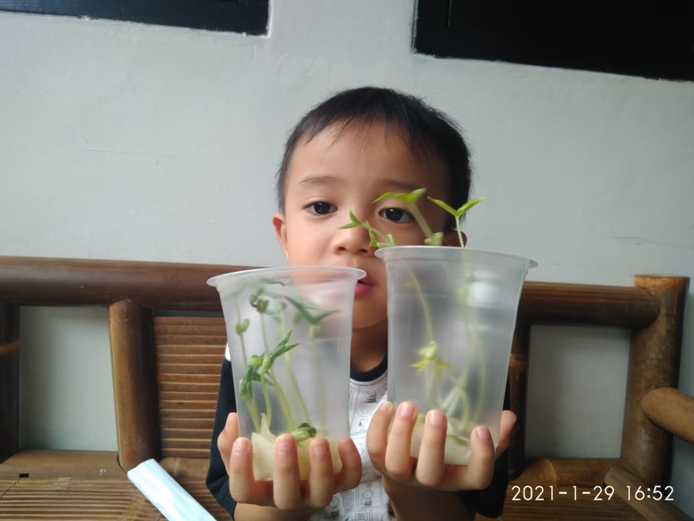

Kelas 1
1. Corong Bunyi

Ide eksperimen sains pertama yang bisa dicoba untuk anak-anak SD adalah corong bunyi. Dengan melakukan eksperimen ini, diharapkan anak-anak dapat mengenal bunyi yang dikeluarkan dari mulut mereka. Ikuti langkah-langkah di bawah ini untuk membuat eksperimen sains corong bunyi:
1. Siapkan kertas atau kalender bekas.
2. Gulung kertas atau kalender bekas tersebut menjadi seperti terompet.
3. Potong bagian ujungnya agar terlihat lebih rapi.
4. Beri sisi ujung corong tersebut dengan lem atau selotip.
5. Minta anak untuk bersuara dari sisi terompet dengan lubang kecil.
6. Suara mereka pun akan terdengar lebih nyaring saat berbicara dengan corong tersebut.
Kelas 2
2. Tidak Basah Meski di Air

Selanjutnya ada eksperimen sains yang melibatkan air. Dengan melakukan eksperimen ini, anak-anak akan dikenalkan dengan pengaruh udara yang dapat membuat benda tidak basah meski dicelupkan ke dalam air. Untuk mencoba eksperimen ini diperlukan alat-alat sederhana seperti gelas kaca, bola pingpong, kertas, dan wadah.
Ikuti langkah-langkah berikut untuk mencoba eksperimen sains tidak basah meski di air:
1. Letakkan kertas di bagian dasar gelas.
2. Siapkan wadah berisi air, letakkan bola pingpong di bagian atasnya.
3. Mintalah anak untuk membalik gelas dalam posisi mulut gelas ke arah bawah.
4. Kemudian arahkan gelas menuju bola pingpong dan tenggelamkan bola tersebut.
5. Reaksi yang terjadi adalah bola dan kertas yang ada di dalam tidak basah.
Kelas 3
3. Pensil Patah di Dalam Air

Eksperimen sains untuk anak SD lainnya yang tak kalah seru untuk dicoba adalah pensil patah di dalam air.
Melalui eksperimen ini dapat menjadi cara untuk mengenalkan kepada anak-anak tentang sifat cahaya yang dapat mengalami pembiasan.
Agar dapat mengikuti eksperimen ini terlebih dahulu harus menyiapkan alat-alat sederhana seperti gelas kaca, pensil, dan air.
Berikut langkah-langkah untuk melakukan eksperimen sains pensil patah di dalam air:
1. Isi gelas kaca dengan air, kira-kira tiga perempat bagian.
2. Minta anak untuk memasukkan pensil ke dalam gelas berisi air.
3. Kemudian dapat mengamatinya secara bersama-sama yang menunjukkan pensil seolah-olah patah.
Kelas 4
4. Menimbang Udara

Ingin mengenalkan anak-anak kepada satuan berat? Cobalah untuk melakukan eksperimen berupa menimbang udara. Melalui eksperimen ini anak-anak dapat diperkenalkan jawaban atas pertanyaan apakah udara memiliki berat? Sebelum mencobanya, siapkan alat-alat yang dibutuhkan terlebih dahulu. Cukup persiapkan empat balon dengan warna berbeda,
sedotan plastik, kaleng minuman atau benda dengan tinggi yang sama, dan selotip.
Berikut langkah-langkah eksperimen menimbang udara:
1. Pasang balon di sisi kanan dan kiri sebuah sedotan plastik, rekatkan dengan selotip.
2. Susun dua sedotan plastik di antara kaleng minuman atau benda yang tingginya sama.
3. Taruh sedotan dengan balon tersebut secara melintang tepat di atas dua sedotan plastik tadi.
4. Minta anak untuk mengamati tentang kondisi balon yang terlihat seimbang satu sama lain.
5. Kemudian pasang lagi sebuah balon di sedotan plastik dan rekatkan dengan selotip.
6. Pada bagian balon yang satu, jangan lupa untuk meniupkan sedikit udara ke dalamnya lalu pasang ke sedotan dan rekatkan dengan selotip.
7. Minta anak untuk mengamati bahwa balon yang berisi udara akan menurun.
Kelas 5
5. Merubah Warna Primer

Perubahan warna dapat terjadi apabila warna-warna primer disatukan.
Hal ini mungkin belum dipahami secara jelas oleh anak-anak SD.
Dengan adanya eksperimen sains berubah jadi apa? diharapkan mereka dapat mengetahui proses perubahan warna.
Sebelumnya perkenalkan terlebih dahulu anak-anak terkait warna primer yaitu biru, kuning, dan merah.
Lalu siapkan alat-alat seperti pewarna makanan dengan ketiga warna primer, air, dan beberapa gelas plastik bekas air mineral.
Kemudian ikuti langkah-langkah berikut:
1. Isi gelas-gelas tersebut dengan air.
2. Masukkan pewarna makanan di masing-masing gelas.
3. Siapkan gelas kosong sebagai media pencampur warna.
4. Minta anak untuk mengkreasikan campuran warna-warna primer tadi. Seperti contohnya merah yang bertemu dengan biru akan menjadi ungu, lalu jika kuning dicampur biru akan menjadi hijau, begitu pun seterusnya.
Kelas 6
6. Pertumbuhan Kecambah

Selanjutnya ada sebuah eksperimen sains yang melibatkan makhluk hidup berupa tanaman. Eksperimen yang satu ini mungkin sudah tidak asing lagi bagi sebagian besar orang. Alat-alat yang perlu dipersiapkan adalah gelas plastik bekas air mineral dua buah, kapas dua buah, sedikit kacang hijau, dan air. Nantinya eksperimen akan dibagi ke dalam dua situasi berbeda yaitu pertama dengan menaruhnya di tempat gelap dan kedua di tempat terang.
Berikut langkah-langkah mencoba eksperimen sains ini:
1. Taruh kapas yang sudah dibasahi oleh air pada dasar gelas plastik bekas.
2. Beri beberapa butir kacang hijau.
3. Pisahkan gelas pertama dan tempatkan di ruang yang mendapatkan cahaya.
4. Kemudian pada gelas kedua tempatkan di ruang yang tidak mendapatkan cahaya.
5. Tunggu beberapa hari untuk bisa melihat hasil eksperimen ini.
6. Minta anak memperhatikan pertumbuhan dari kedua kacang hijau tersebut.
7. Nantinya kacang hijau yang ditaruh di tempat dengan cahaya akan tumbuh dengan baik.
8. Sebaliknya, kacang hijau yang ditaruh di tempat minim cahaya akan lebih lambat pertumbuhannya.